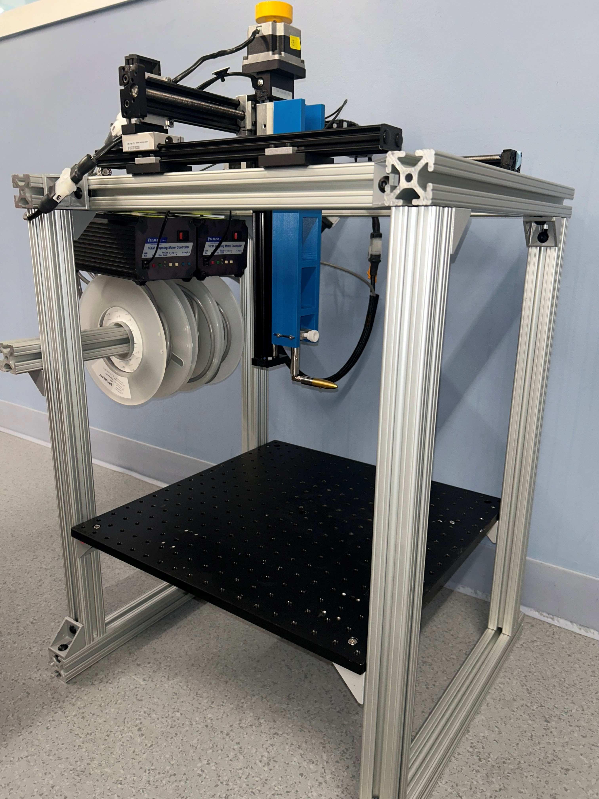
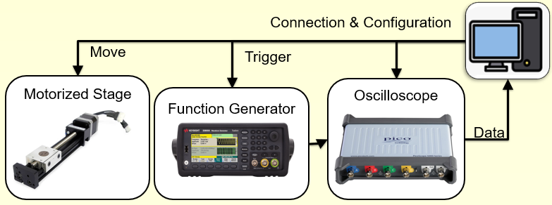
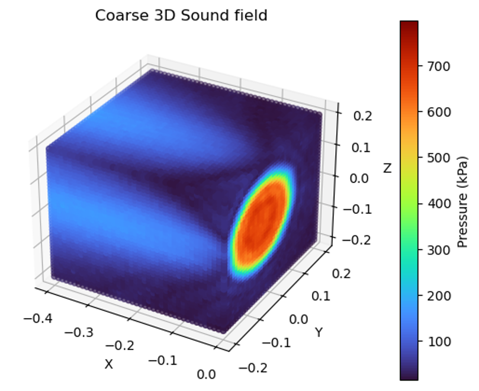
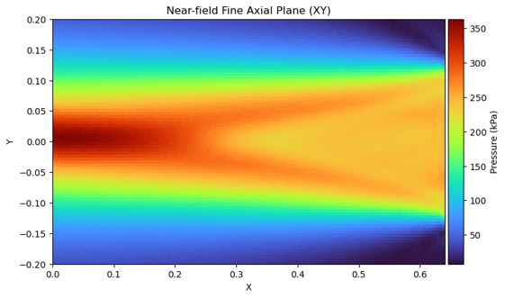
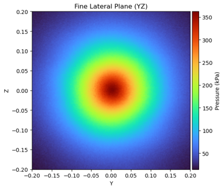

Focused ultrasound (FUS) has demonstrated significant potential for noninvasively modulating brain activity (neuromodulation) and enabling brain-tumor biomarker sampling (sonobiopsy). Accurate characterization of the acoustic fields generated by FUS transducers is therefore essential for treatment precision, safety, and reproducibility. To address this need, I independently developed a lab-wide hydrophone scanning system for acoustic field characterization of ultrasound transducers, integrating off-the-shelf instrumentation to target commercial-grade calibration performance.





I am responsible for the entire system. The program communicates with a function generator through VISA, a PicoScope through the official PicoSDK, and two Velmex motion controllers through a serial port. The gantry system is self-assembled from three motorized stages and one free stage.
Developed in C++ using Qt, the program integrates instrument connection, configuration, and control into a single graphical user interface, with timestamped logging and message boxes that provide operational guidance and error information. Users can configure the excitation frequency, amplitude, and burst cycle count, together with the oscilloscope’s voltage range, sample count, and timebase (frequency). Manual positioning controls support incremental movement along each axis, movement to specified coordinates, and coordinate zeroing. Individual measurements coordinate oscilloscope acquisition with function generator triggering and display the captured waveform directly in the interface.
For automated volumetric scans, users define the scan boundaries and spatial step size. The program first moves the stage to the two boundary corners for safety inspection, then waits for the user to continue. During a scan, it follows a serpentine trajectory through the selected region, collecting a waveform at each position and updating the waveform display and scan progress. Pause, resume, and stop controls allow the operator to manage acquisition and change configuration during a scan.
Individual waveform captures and completed scan results are saved as CSV files with instrument settings and position information for subsequent analysis. Scan exports include pressure values calculated using the configured hydrophone sensitivity. After completing a scan, the stage returns to the intended focus.
https://yiyangruan2004.github.io/CalibrationStage